What if distributions could learn by interacting?
A Gaussian kernel creates a field around each observation. Differentiate that field, and you obtain a force. Combine those forces, and entire probability distributions can be shaped by optimization.
Conventional learning objectives commonly penalize individual errors, such as squared loss. Information-Theoretic Learning (ITL) instead optimizes descriptors of entire probability distributions: Rényi entropy, statistical divergence, and mutual information. Principe’s central computational insight is that these quantities admit tractable, nonparametric kernel estimators.
Five reproducible experiments show Gaussian potential landscapes, analytically verified information forces, attraction and repulsion under entropy optimization, distribution matching via quadratic divergence, and class-informative feature learning via quadratic mutual information (QMI).
These are actual outputs from the supplied Colab experiment, re-executed for this page. They are illustrative synthetic-data results, not general performance claims.
From a kernel to an information objective
Begin with an isotropic Gaussian kernel in \(d\) dimensions:
From observations \(\mathbf x_1,\dots,\mathbf x_N\), the local information field is the average of the kernels centered on the observations:
The global quadratic information potential averages this field at the sample locations:
Here \(h=\sqrt{2}\sigma\) when \(\sigma\) is the Gaussian KDE bandwidth, because integrating a product of Gaussian kernels doubles their variance.
Five visual experiments
We use normalized Gaussian kernels, fixed pseudorandom seeds, NumPy for analytic fields and gradients, and PyTorch automatic differentiation for optimization. Each figure below was generated from the supplied notebook; all source is included in the downloadable repository.
Gaussian kernels as potential landscapes
Each observation is a center of a localized potential. A small bandwidth produces sharply localized peaks; a larger bandwidth spreads the influence of each particle and smooths out the landscape.
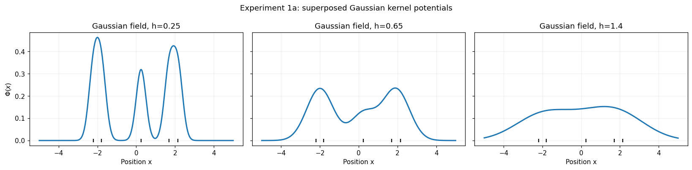
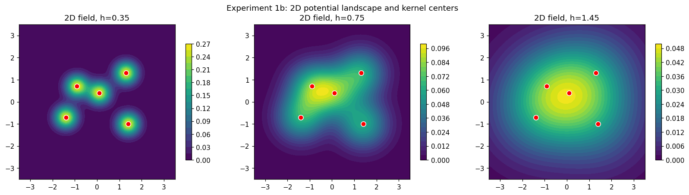
Try it: change the bandwidth
InteractiveSame five 1D particle positions as in the notebook. This canvas uses normalized Gaussian kernels.
Information forces are gradients of the field
In the ITL field-gradient convention, the information force points uphill in the potential landscape. It is distinct from the negative gradient convention for mechanical potential energy.
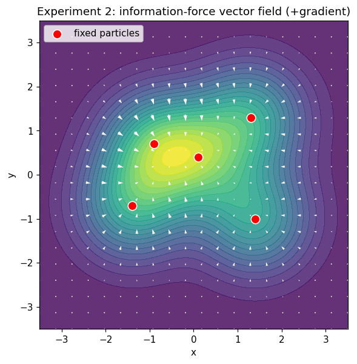
The notebook verifies these derivatives by finite differences. At the point \((0.45,-0.28)\), both analytic and numerical derivatives give \((-0.00832751,\,0.02821155)\), with maximum absolute error \(8.02\times10^{-13}\).
Normalizing the force by the local field yields the score, which connects directly to mean shift:
The mean-shift displacement computed in the notebook, \((-0.15986633,\,0.24185833)\), matches \(h^2\) times the score to printed precision.
Why entropy gives attraction and repulsion
When sample positions themselves are optimized, maximizing \(V_2\) produces attraction (equivalently minimizing Rényi entropy), while minimizing \(V_2\) produces repulsion (maximizing entropy).
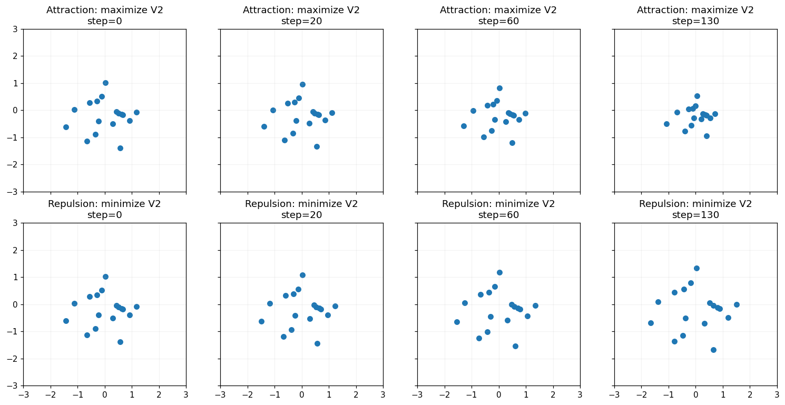
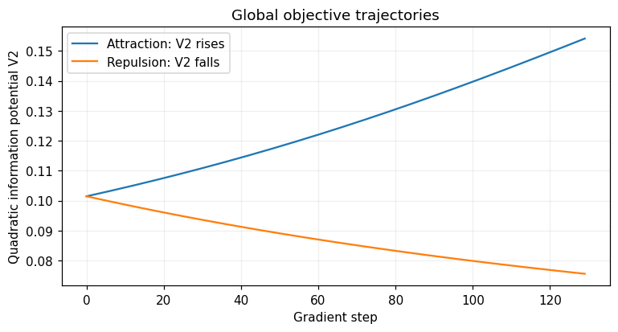
The global particle derivative differs from the local force by a factor of \(2/N\). The notebook checks the global derivative numerically: the analytic result is 0.0030670206689313293, versus the finite difference 0.0030670206693783615.
These are optimization trajectories, not simulated physical time. In the absence of constraints, entropy maximization may keep spreading particles indefinitely.
Match one distribution to another
Let \(p\) be a fixed reference density and \(q\) an adaptive density. The squared Euclidean density divergence decomposes into three information potentials:
The \(V_q\) term produces repulsion among adaptive particles under gradient descent; the cross term \(-2V_c\) attracts them toward the reference sample set. Their combination produces distribution matching rather than arbitrary collapse.
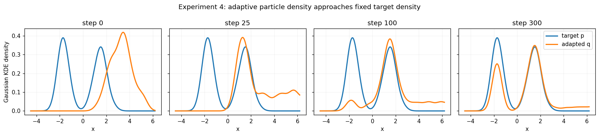
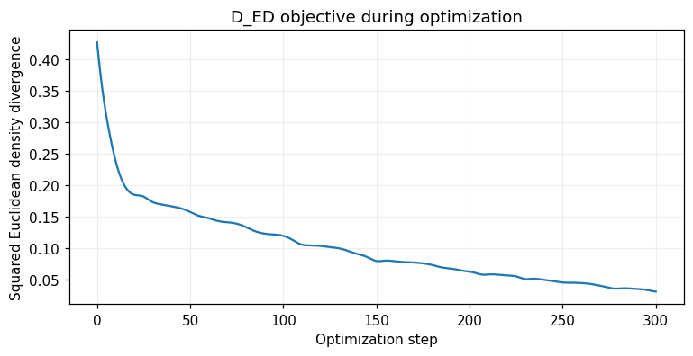
We also compare two closed-form divergences for unit-variance Gaussian densities separated by \(\Delta\):
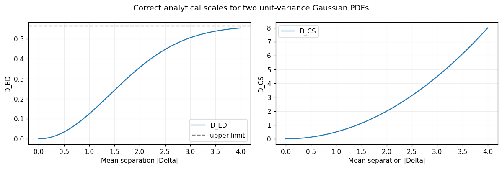
For matching Gaussian KDEs, this squared density \(L^2\) discrepancy has the form of a squared Gaussian-kernel MMD at interaction width \(h\). Not all ITL divergences are MMD.
Discover informative features with quadratic mutual information
Suppose the input has two coordinates, but only one carries class information. Can an information-theoretic criterion learn which direction matters?
We optimize a one-dimensional projection \(Z=\mathbf w^\top\mathbf X\), with \(\|\mathbf w\|=1\), using Euclidean quadratic mutual information between the feature \(Z\) and a binary class variable \(C\).
The projected real-valued features use a Gaussian kernel. Categorical class labels use the Kronecker-delta kernel, \(k_C(c_i,c_j)=\mathbf1\{c_i=c_j\}\); they are not treated as continuous Gaussian observations.
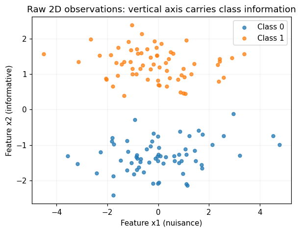
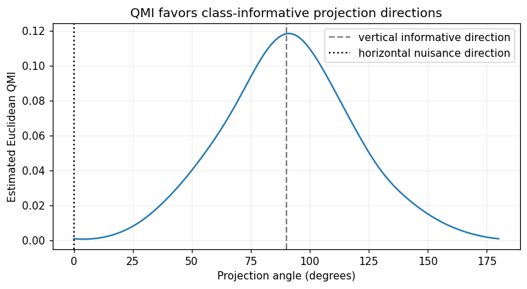
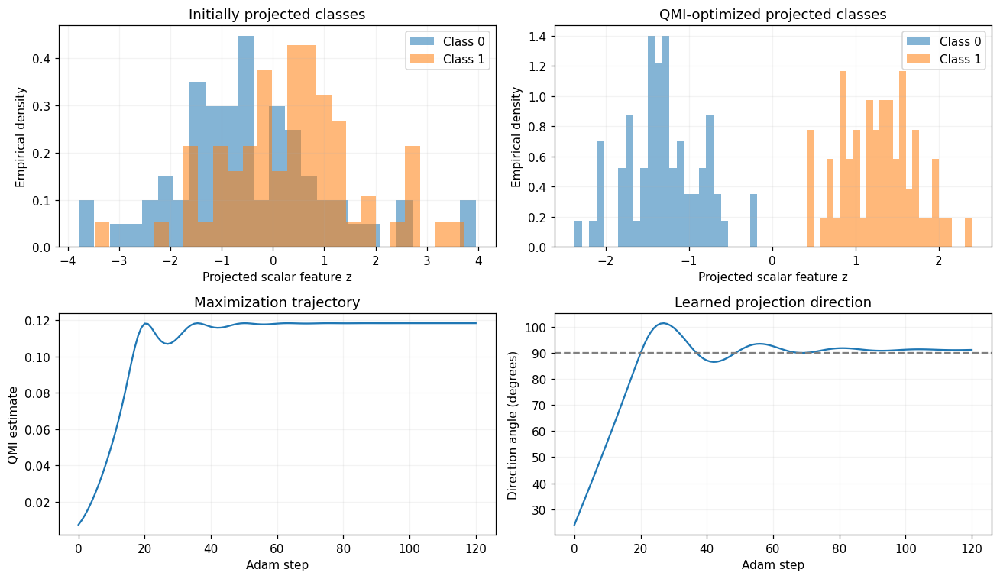
The automatic derivative of QMI with respect to angle is independently verified: PyTorch gives 0.0828095998302168, versus 0.08280959982870373 by finite differences.
Three derivatives—not one
For reasoning about ITL algorithms, it is essential to distinguish a local force, the gradient of global potential, and the gradient of an objective with respect to learnable parameters.
| Object | Derivative | Meaning |
|---|---|---|
| Local field | \(\mathbf F(x)=\nabla_x\Phi(x)\) | How the field changes at a query location |
| Global potential | \(\nabla_{x_k}V_2=\tfrac2N\mathbf F(x_k)\) | How total interactions change when a particle moves |
| Entropy | \(\nabla_{x_k}H_2=-\nabla_{x_k}V_2/V_2\) | Direction of change in Rényi entropy |
| Model parameters | \(\nabla_wJ=\sum_i(\partial y_i/\partial w)^\top\nabla_{y_i}J\) | How information gradients train a model |
The book's broader idea is that global information objectives become tractable through local pairwise kernel interactions, and their gradients can be passed through linear models, adaptive filters, or neural networks.
Run the experiments yourself
The accompanying executed notebook includes all five experiments, analytic and numerical gradient checks, the exact synthetic-data seeds, and the scripts that generated every figure above.
Download the executed notebook Open Google Colab ↗
For a local run, install numpy, matplotlib, torch, and jupyter. The page itself is static HTML/CSS/JavaScript and works on GitHub Pages without a build step or server.
Reference and attribution
José C. Principe. Information Theoretic Learning: Rényi's Entropy and Kernel Perspectives. Springer, 2010. DOI: 10.1007/978-1-4419-1570-2.
Relevant material: Chapter 2 §§2.3, 2.6, 2.8–2.10; Chapter 6 §6.6; Chapter 7 §7.6. The derivations are based on the book's framework. The synthetic examples, implementation details, numerical outputs, and figures are notebook-generated demonstrations, not figures copied from the book.
Design inspiration: Rikiya Takehi et al., “Sparks of Weight-Space Programming”. This page uses an original layout and styling.